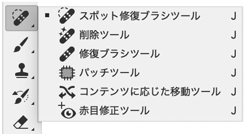
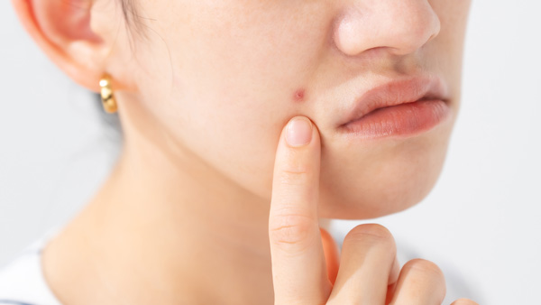
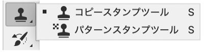
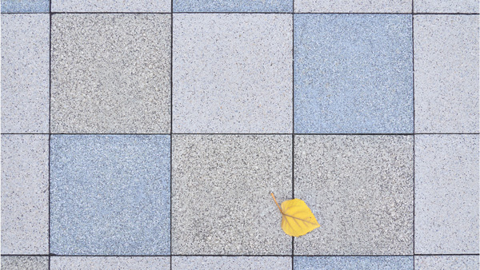
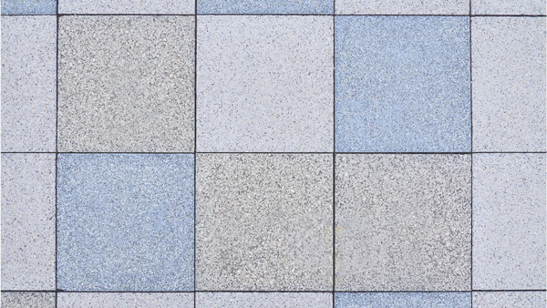
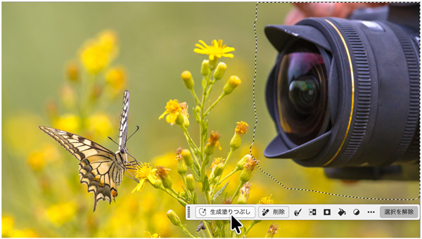
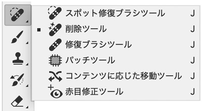
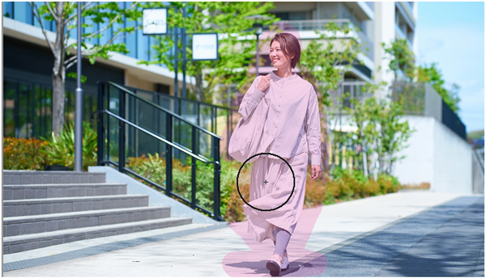
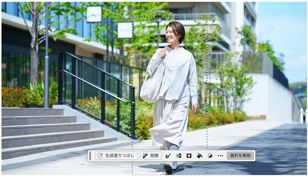
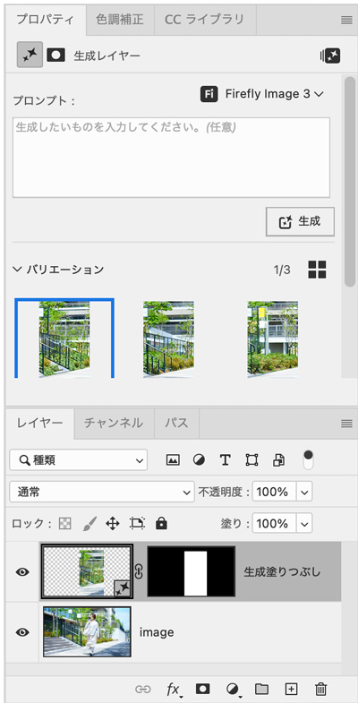

Photoshopの削除テクニック5選
1.スポット修復ブラシツール：最速！小さい不要物を一発消し

スポット修復ブラシツールとは
- 選択した箇所の周囲の情報を自動的に分析し、自然な見た目になるように自動で置き換えてくれるのが特徴です

※2025年9月時点、「削除ツール」でも同様の効果が得られます。
2.コピースタンプツール：質感を保って「塗って消す」

コピースタンプツールとは
- 「コピースタンプツール」は、画像の一部をコピーして、別の場所にペイントするように貼りつけるツールです
- スポット修復ブラシツールとは異なり、元画像のピクセルをそのまま写すため、模様や質感、パターンを忠実に再現したいときに便利です


3.生成塗りつぶし：背景に自然になじませる万能型

生成塗りつぶしとは
- 「コンテンツに応じた塗りつぶし→生成塗りつぶし」は、選択範囲をPhotoshopが自動で解析し、周囲に自然に馴染むように置き換えてくれる機能です
- コピースタンプツールのように自分で描き込む必要がなく、広範囲でも一気に自然に消したいときに重宝します
※2025年9月時点、「削除ツール」でも同様の効果が得られます。
4.削除ツール：AI任せでサクッとす、万能で手軽

削除ツールとは
- 削除ツールは、Adobe FireflyのAI機能を活用した自動削除ツールで、選択した部分を違和感なく自然に塗りつぶしてくれます
- 従来の「スポット修復ブラシ」や「コンテンツに応じた塗りつぶし」よりも簡単かつ高精度に背景を補完できるのが大きな特徴です
5.生成塗りつぶし：AIで自動化、精度も自由度も高レベル
削除ツール

生成塗りつぶしとは
- 「生成塗りつぶし」は、Adobe Fireflyを活用したPhotoshopの生成AI機能です
- 選択範囲を指定し、テキストプロンプトでどう置き換えるかを指示できるのが特徴で、プロンプトを空欄にすると自然に削除、補完してくれます
- 複雑な背景にも強く、構造的な整合性もAIが自動で調整してくれるのが大きな魅力です
- 1回の生成で3つのバリエーションを生成してくれるのも特徴です。

